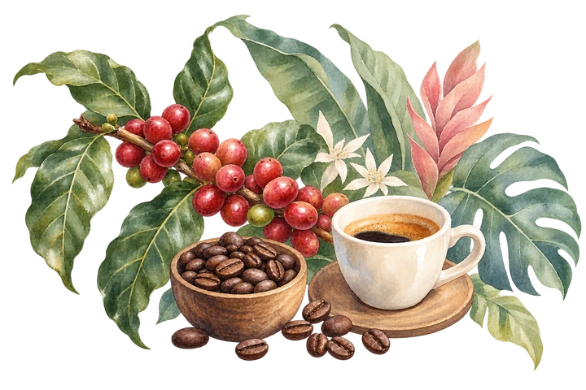
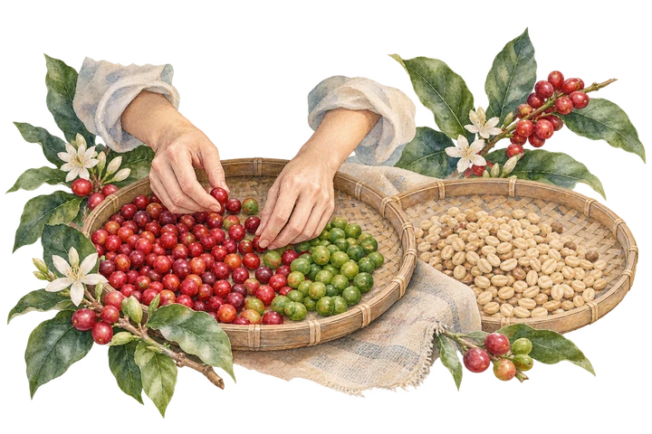

Northern highland Arabica often performs well as filter coffee, espresso single origin, and modern Thai specialty lots.

Robusta south
Body, crema, and local identity.
Southern Robusta can support espresso blends, traditional drinks, and specialty Robusta when sorting and processing improve.

Producer checklist
For farmers and processors.
Pick ripe cherries separately from underripe, overripe, and damaged fruit.
Float and sort cherries before processing to remove low-density defects.
Record lot name, variety, farm area, harvest date, process, fermentation time, and drying dates.
Dry coffee evenly with airflow, shade control, and protection from rain and ground contact.
Store parchment or green coffee away from heat, moisture, fuel, spices, and strong odors.
Roaster checklist
For roasters and QC teams.
Measure moisture, density, screen size, defect count, and sample roast before production roasting.
Separate roast goals for filter, espresso, milk drinks, and traditional Thai drink formats.
Cup each roast after adequate rest and track sweetness, acidity, body, aftertaste, and defects.
Adjust roast development when coffee tastes grassy, baked, smoky, hollow, or too bitter.
Share brew recipes with cafes so the intended profile survives service.
Thai cafe service
Make specialty coffee accessible.
Connect farm practices to cup notes: ripe cherry, clean fermentation, stable drying, and careful roasting.
For new drinkersOffer simple flavor words: chocolate, nutty, floral, citrus, sweet, bold.For baristasKeep one house recipe, one adjustment rule, and one brew log per coffee.For roastersInclude roast date, origin, process, brew suggestion, and rest recommendation.For farmersExplain the farm story through measurable practices, not only romantic origin copy.
YOUR NEXT LITTLE STEP
Bring the origin into your cup.
Explore bean profiles or try a recipe from the brewer collection.